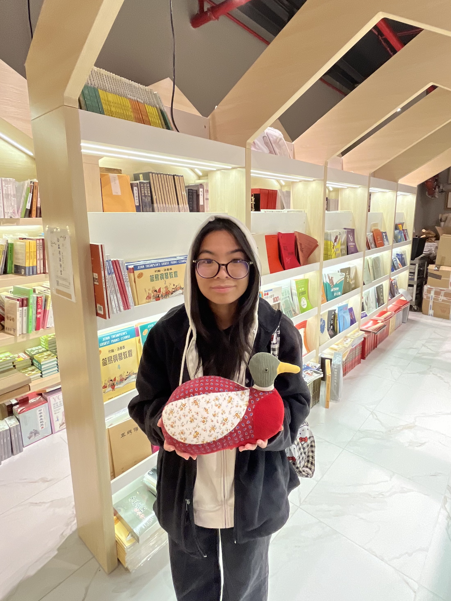
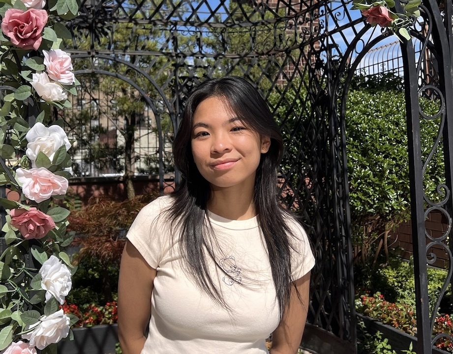

My name is Danielle and I go by she/her pronouns. I'm currently a Junior at Drexel University studying Computer Science.
I'm an aspiring software engineer with a focus on fullstack development. I have a strong passion for developing intuitive and thoughtful applications. I'm always looking for new opportunities to learn and grow as a developer!

Apart from my studies, I enjoy lifting, going to concerts, playing video games, baking, taking photos, and spending time with my cat.
